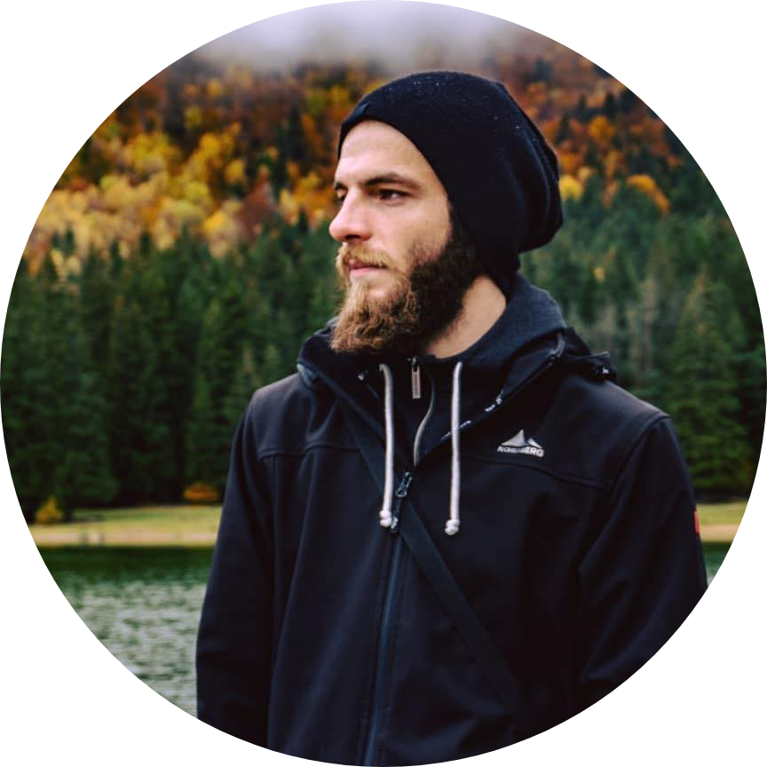

Hello !
I am a programmer in my free time, i love developing web pages,
exact sciences and playing the guitar.
My Skills

Design and Development
I started learning Web Design at a late age even tho i felt attracted to this since i was young. As soon as i started learning i realised this is one of my passions.

Naval Architecture and Engineering
I am currently also finishing my studies as a naval architect in engineering. This is a branch that i also have a passion for and i am looking forward to have this as a skill as well in the near future.
Get In Touch
In order for great things to be achieved, we need to take great risks.
For more details about me and my work feel free to contact me.
Contact me